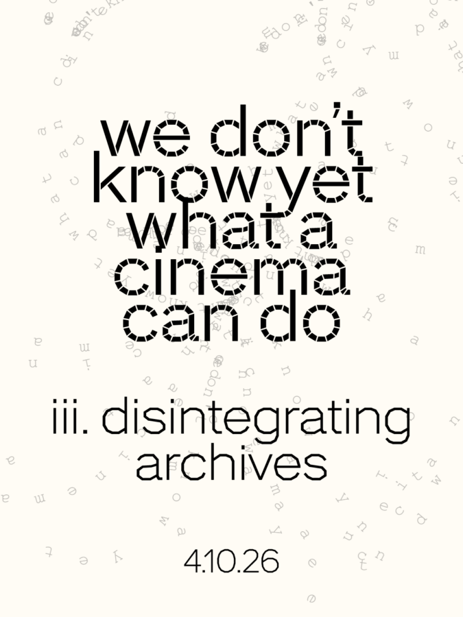

Onion City: [We Don’t Know Yet] What A Cinema Can Do
Doors Open at 7:30PM & Show Starts at 8:00PM
Onion City and CCAM co-present the third annual edition of [WE DON’T KNOW YET] WHAT A CINEMA CAN DO, a night of new media live performance with the theme of Disintegrating Archives.
This event explores the resonances of “expanded cinema” today, putting cinematic art to the tasks of resistance, rupture, and reconfiguration of mediatic experience. We ask: how can experimental modes of animating sound and moving images reconfigure the possibility of our relating to one another anew? Re:: mix; vision; mediate; compile; concile; wire; work; enact.
This year WDKY features new works or reworkings by three artists developing distinct technical, aesthetic, and cultural niches: AJ McClenon’s transmedia sound and video work moves through topics of blackness, beauty, personal narrative, and the broad spectrum of femininity. The arts collective Alterotics’ moving-image art, archival research, and event hosting activates public life for trans/queer people. James Connolly’s real-time sound and media performance activates expressive potentials of technical systems sequestered behind consumer interfaces.
These three artists are also joined by special guest Aria Pedraza, who will introduce the Midwest Rave Culture Archive.
Advance ticket purchase recommended. Admission increases to $40 rush tickets at the door.